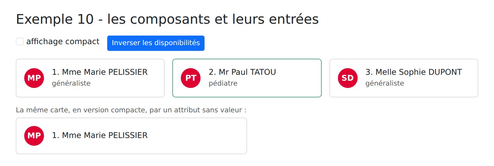
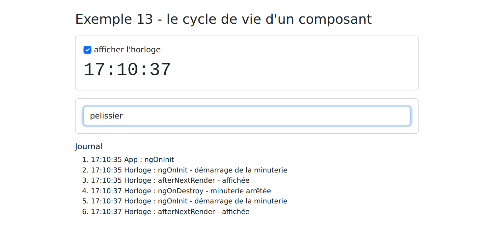
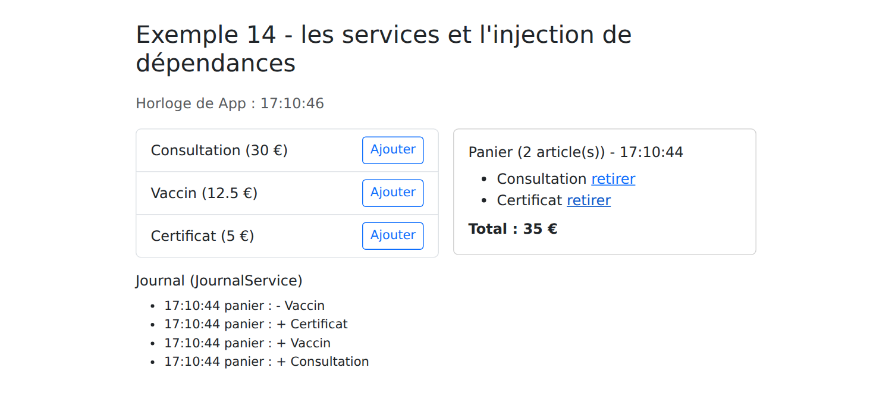
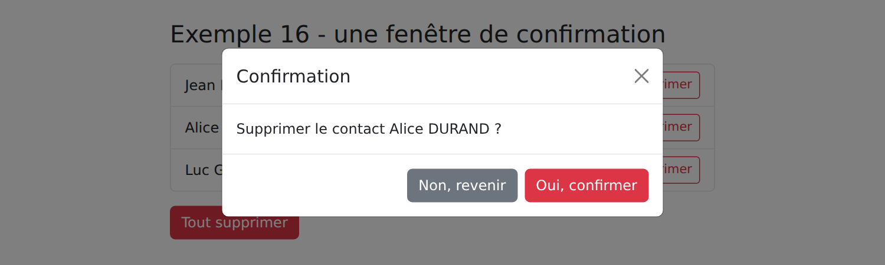

3. Les composants
3.1. Exemple 10 : les composants et leurs entrées
Un composant est un morceau d'interface réutilisable. Cet exemple affiche des cartes de médecins : un composant [CarteMedecin] (l'enfant), utilisé plusieurs fois par le composant [App] (le parent).
Les fichiers d'un composant sont habituellement rangés dans un dossier à son nom :
| 10-composants/src/app/
├── carte-medecin/
│ ├── carte-medecin.ts la classe du composant
│ ├── carte-medecin.html son template
│ └── carte-medecin.css son style
├── medecin.ts le type Medecin
├── app.ts
└── app.html
|
Le type des données partagé par le parent et l'enfant :
| // le type des données partagé par le parent (App) et l'enfant (CarteMedecin)
export interface Medecin {
id: number;
titre: string;
prenom: string;
nom: string;
specialite: string;
disponible: boolean;
}
|
3.1.1. L'enfant
| // =========================================================================
// 10-composants/src/app/carte-medecin/carte-medecin.ts - un composant ENFANT
// -------------------------------------------------------------------------
// Il reçoit ses données de son parent par des ENTRÉES (inputs), déclarées
// avec input() : chaque entrée est un SIGNAL en lecture seule, qui suit la
// valeur transmise par le parent. Leur type est vérifié à la compilation :
// <app-carte-medecin [medecin]="42"> serait refusé.
//
// Règle d'or : un composant ne MODIFIE JAMAIS ses entrées. Les données
// descendent du parent vers l'enfant ; pour demander un changement,
// l'enfant émet un événement (cf. exemple 11).
// =========================================================================
import { booleanAttribute, Component, computed, input } from '@angular/core';
import { Medecin } from '../medecin';
@Component({
// le sélecteur : la balise qui représente ce composant chez son parent
selector: 'app-carte-medecin',
templateUrl: './carte-medecin.html',
styleUrl: './carte-medecin.css',
})
export class CarteMedecin {
// input.required : le parent DOIT fournir cette entrée
readonly medecin = input.required<Medecin>();
readonly rang = input.required<number>();
// input(valeur par défaut) : une entrée facultative. booleanAttribute
// permet d'écrire simplement <app-carte-medecin compact> pour true
readonly compact = input(false, { transform: booleanAttribute });
// un computed fondé sur une entrée : recalculé si le parent la change
protected readonly initiales = computed(() => `${this.medecin().prenom[0]}${this.medecin().nom[0]}`);
}
|
- ligne 19 : le sélecteur : le parent écrira [<app-carte-medecin>] ;
- lignes 25-29 : les entrées ([inputs]) du composant : les données que lui transmet son parent. [input()] crée un signal en lecture seule, qui suit la valeur transmise par le parent :
- lignes 25-26 : [input.required<T>()] : une entrée obligatoire. Oublier [[medecin]] dans le template du parent est une erreur de compilation ;
- ligne 29 : [input(valeur par défaut)] : une entrée facultative. L'option [transform] convertit la valeur reçue : [booleanAttribute] fait de la présence de l'attribut ([<app-carte-medecin compact>], sans valeur) un [true], comme pour l'attribut HTML [disabled] ;
- ligne 32 : un [computed] fondé sur une entrée : recalculé si le parent change l'entrée.
Les entrées ne sont pas [protected] : elles font partie de l'interface publique du composant, celle que son parent utilise.
Règle d'or : un composant ne modifie jamais ses entrées (elles sont d'ailleurs en lecture seule). Les données descendent du parent vers l'enfant ; pour demander un changement, l'enfant émet un événement (exemple 11).
| <div class="card h-100" [class.border-success]="medecin().disponible">
<div class="card-body d-flex gap-3 align-items-center">
<div class="initiales">{{ initiales() }}</div>
<div>
<!-- les entrées sont des signaux : on les lit en les appelant -->
<h2 class="h6 mb-1">{{ rang() }}. {{ medecin().titre }} {{ medecin().prenom }} {{ medecin().nom }}</h2>
@if (!compact()) {
<p class="mb-0 text-muted small">{{ medecin().specialite }}</p>
}
</div>
</div>
</div>
|
- lignes 1, 6, 8 : les entrées sont des signaux : on les lit en les appelant ;
- lignes 7-9 : la spécialité n'est affichée que dans la version normale de la carte.
| /* le style du composant : il ne s'applique qu'à SES éléments */
.initiales {
width: 2.5rem;
height: 2.5rem;
border-radius: 50%;
display: flex;
align-items: center;
justify-content: center;
background: #dd0031;
color: white;
font-weight: bold;
}
|
La classe [initiales] ne concerne que ce composant : un autre composant pourrait avoir sa propre classe [initiales], sans conflit.
3.1.2. Le parent
| // =========================================================================
// 10-composants/src/app/app.ts - le composant PARENT
// -------------------------------------------------------------------------
// Il importe le composant CarteMedecin (tableau imports) et l'utilise comme
// une nouvelle balise HTML, <app-carte-medecin>, autant de fois qu'il le
// faut : un composant est un morceau d'interface RÉUTILISABLE, avec ses
// propres données, son template et son style.
// =========================================================================
import { Component, signal } from '@angular/core';
import { FormsModule } from '@angular/forms';
import { CarteMedecin } from './carte-medecin/carte-medecin';
import { Medecin } from './medecin';
@Component({
selector: 'app-root',
imports: [FormsModule, CarteMedecin],
templateUrl: './app.html',
})
export class App {
protected readonly medecins = signal<Medecin[]>([
{ id: 1, titre: 'Mme', prenom: 'Marie', nom: 'PELISSIER', specialite: 'généraliste', disponible: true },
{ id: 2, titre: 'Mr', prenom: 'Paul', nom: 'TATOU', specialite: 'pédiatre', disponible: false },
{ id: 3, titre: 'Melle', prenom: 'Sophie', nom: 'DUPONT', specialite: 'généraliste', disponible: true },
]);
protected readonly compact = signal(false);
// le parent modifie SES données : les enfants concernés se mettent à jour
protected inverserDisponibilite(): void {
this.medecins.update((liste) => liste.map((m) => ({ ...m, disponible: !m.disponible })));
}
}
|
- ligne 17 : le parent importe le composant enfant : sans cela, [<app-carte-medecin>] serait une balise inconnue, et la compilation échouerait ;
- lignes 29-31 : le parent modifie SES données. Il remplace chaque médecin par une copie modifiée : l'objet [m] transmis à chaque carte change, et les cartes se mettent à jour.
| <div class="container py-4">
<h1 class="h3 mb-3">Exemple 10 - les composants et leurs entrées</h1>
<div class="d-flex gap-3 mb-3">
<label class="form-check-label">
<input type="checkbox" class="form-check-input" [(ngModel)]="compact"> affichage compact
</label>
<button class="btn btn-sm btn-outline-primary" (click)="inverserDisponibilite()">Inverser les disponibilités</button>
</div>
<div class="row g-3">
@for (m of medecins(); track m.id; let i = $index) {
<div class="col-md-4">
<!-- [medecin]="m" transmet l'OBJET m (une expression) ;
medecin="m", sans crochets, transmettrait la CHAÎNE "m" -->
<app-carte-medecin [medecin]="m" [rang]="i + 1" [compact]="compact()" />
</div>
}
</div>
<p class="mt-3 mb-1 small text-muted">La même carte, en version compacte, par un attribut sans valeur :</p>
<div class="w-50">
<app-carte-medecin [medecin]="medecins()[0]" [rang]="1" compact />
</div>
</div>
|
- ligne 14 : l'enfant s'utilise comme une balise HTML. [[medecin]="m"] est une liaison de propriété vers l'entrée [medecin] : elle transmet l'OBJET [m]. Sans crochets, [medecin="m"] transmettrait la CHAÎNE ["m"], ce que le compilateur refuserait. Un composant sans contenu peut s'écrire avec une balise auto-fermante ([/>]) ;
- ligne 20 : [compact], sans valeur : grâce à [booleanAttribute], l'entrée reçoit [true].
[npm start 10-composants] ; on clique sur « Inverser les disponibilités » :

3.2. Exemple 11 : les sorties d'un composant et model()
Un enfant a deux façons de faire remonter une information vers son parent :
- émettre un événement (une sortie, [output]), que le parent écoute comme un événement HTML ; 2. une liaison dans les deux sens, [[( )]], sur un [model()].
3.2.1. Émettre un événement
Un compteur qui prévient son parent à chaque clic, et quand il atteint sa limite :
| // =========================================================================
// 11-sorties-model/src/app/compteur/compteur.ts
// -------------------------------------------------------------------------
// Un enfant qui PRÉVIENT son parent : output() déclare un événement que le
// composant peut émettre, avec le type de sa donnée. Le parent l'écoute
// comme un événement HTML : <app-compteur (incremente)="..." (limite)="...">.
// =========================================================================
import { Component, input, output, signal } from '@angular/core';
@Component({
selector: 'app-compteur',
template: `
<div class="d-flex align-items-center gap-2 mb-2">
<span class="w-25">{{ libelle() }}</span>
<button class="btn btn-sm btn-outline-primary" (click)="plus()">+1</button>
<span class="badge text-bg-secondary">{{ valeur() }} / {{ max() }}</span>
</div>
`,
})
export class Compteur {
readonly libelle = input.required<string>();
readonly max = input.required<number>();
// deux événements : incremente (avec la nouvelle valeur) et limite (sans donnée)
readonly incremente = output<number>();
readonly limite = output<void>();
protected readonly valeur = signal(0);
protected plus(): void {
if (this.valeur() >= this.max()) {
this.limite.emit();
return;
}
this.valeur.update((v) => v + 1);
this.incremente.emit(this.valeur());
}
}
|
- lignes 13-19 : le template du composant, écrit dans le décorateur (propriété [template], entre accents graves) ;
- lignes 26-27 : [output<T>()] déclare une sortie : un événement que le composant peut émettre, avec le type de sa donnée. [limite] n'a pas de donnée ([void]) ;
- lignes 33 et 37 : [emit(donnee)] émet l'événement ; le parent reçoit la donnée.
On évite de donner à une sortie le nom d'un événement du navigateur ([change], [click]...) : les événements du navigateur émis par les éléments du composant remontent jusqu'à son élément hôte, et le parent les recevrait aussi.
3.2.2. Une liaison dans les deux sens
Un champ de formulaire « maison » (libellé, champ, aide, compteur de caractères) qui se relie à une donnée du parent comme un [ngModel] :
| // =========================================================================
// 11-sorties-model/src/app/champ-texte/champ-texte.ts
// -------------------------------------------------------------------------
// Un champ de formulaire "maison" (libellé + champ + aide + compteur de
// caractères) qui accepte une liaison dans les DEUX sens, comme ngModel :
// <app-champ-texte [(valeur)]="nom" libelle="Nom" [max]="20" />
//
// model() crée un signal MODIFIABLE relié au parent : le LIRE donne la
// valeur du parent, l'ÉCRIRE (set) émet l'événement valeurChange, que la
// syntaxe [( )] traduit en une mise à jour du signal du parent. Les données
// restent donc bien la propriété du parent.
// =========================================================================
import { Component, input, model } from '@angular/core';
// un compteur partagé par toutes les instances : un identifiant unique par
// champ, pour relier <label for> et <input id>
let prochainNumero = 0;
@Component({
selector: 'app-champ-texte',
template: `
<div class="mb-3">
<label class="form-label" [for]="id">{{ libelle() }}</label>
<!-- [value] : la valeur du parent ; (input) : chaque frappe la remplace -->
<input class="form-control" [id]="id" [value]="valeur()" [attr.maxlength]="max()"
[class.is-invalid]="valeur().length === max()" (input)="saisir($event)">
<div class="form-text">{{ aide() }} ({{ valeur().length }} / {{ max() }})</div>
</div>
`,
})
export class ChampTexte {
readonly valeur = model.required<string>();
readonly libelle = input.required<string>();
readonly max = input.required<number>();
readonly aide = input('');
protected readonly id = `champ-texte-${++prochainNumero}`;
protected saisir(evenement: Event): void {
this.valeur.set((evenement.target as HTMLInputElement).value);
}
}
|
- ligne 33 : [model()] crée un signal modifiable, relié au parent. Le LIRE donne la valeur du parent ; l'ÉCRIRE ([set], ligne 41) change la valeur ET émet l'événement [valeurChange] (le nom du modèle suivi de [Change]). Le parent qui écrit [[(valeur)]="signal"] voit ainsi son signal mis à jour ;
- ligne 18 : une variable du module (hors de la classe) est partagée par tous les exemplaires du composant : un compteur qui donne à chaque champ un identifiant unique (ligne 38), pour relier [<label for>] et [<input id>] ;
- lignes 26-27 : [[value]] affiche la valeur du parent ; [(input)] la remplace à chaque frappe (ligne 41). [[attr.maxlength]] est une liaison d'attribut HTML (l'attribut [maxlength]), et non de propriété.
3.2.3. Le parent
| // =========================================================================
// 11-sorties-model/src/app/app.ts - le parent écoute ses enfants
// -------------------------------------------------------------------------
// Deux façons pour un enfant de faire remonter une information :
// 1. émettre un événement (output), que le parent écoute avec ( ) ;
// 2. une liaison dans les deux sens [( )] sur un model() : un raccourci
// pour l'entrée [valeur] + l'événement (valeurChange).
// =========================================================================
import { Component, computed, signal } from '@angular/core';
import { Compteur } from './compteur/compteur';
import { ChampTexte } from './champ-texte/champ-texte';
@Component({
selector: 'app-root',
imports: [Compteur, ChampTexte],
templateUrl: './app.html',
})
export class App {
protected readonly total = signal(0);
protected readonly message = signal('');
protected readonly prenom = signal('Marie');
protected readonly nom = signal('PELISSIER');
protected readonly nomComplet = computed(() => `${this.prenom()} ${this.nom().toUpperCase()}`);
// le gestionnaire de l'événement incremente : il reçoit la donnée émise ($event)
protected surChange(libelle: string, valeur: number): void {
this.total.update((t) => t + 1);
this.message.set(`${libelle} vaut maintenant ${valeur}`);
}
protected vider(): void {
this.prenom.set('');
this.nom.set('');
}
}
|
| <div class="container py-4" style="max-width: 640px">
<h1 class="h3 mb-3">Exemple 11 - les sorties d'un composant et model()</h1>
<div class="card p-3 mb-4">
<h2 class="h6">1. Des événements émis par les enfants</h2>
<!-- $event : la donnée émise par l'enfant (ici, la nouvelle valeur) -->
<app-compteur libelle="Cafés" [max]="3" (incremente)="surChange('Cafés', $event)"
(limite)="message.set('Pas plus de 3 cafés !')" />
<app-compteur libelle="Verres d'eau" [max]="8" (incremente)="surChange('Verres d\'eau', $event)"
(limite)="message.set('Assez bu.')" />
<p class="mb-0">Total des clics : {{ total() }} - <em>{{ message() }}</em></p>
</div>
<div class="card p-3">
<h2 class="h6">2. Une liaison dans les deux sens avec model()</h2>
<!-- [(valeur)]="prenom" : le signal prenom du parent, lu ET modifié par l'enfant -->
<app-champ-texte [(valeur)]="prenom" libelle="Prénom" [max]="20" aide="Obligatoire" />
<app-champ-texte [(valeur)]="nom" libelle="Nom" [max]="20" aide="Mis en majuscules à l'affichage" />
<p class="mb-0">Données du parent : <strong>{{ nomComplet() }}</strong></p>
<button class="btn btn-sm btn-outline-secondary mt-2 align-self-start" (click)="vider()">Vider (depuis le parent)</button>
</div>
</div>
|
- ligne 7 : [(incremente)="..."] écoute la sortie [incremente] du compteur ; [$event] est la donnée émise (la nouvelle valeur). [libelle="Cafés"], sans crochets : une entrée de type chaîne peut recevoir une valeur constante ;
- ligne 8 : [(limite)] : on peut appeler une méthode d'un signal ([set]) directement dans le template ;
- ligne 9 : une chaîne qui contient une apostrophe : [\'] ;
- ligne 17 : [[(valeur)]="prenom"] : le signal [prenom] du parent (sans parenthèses : on donne le signal lui-même), lu ET modifié par l'enfant. C'est l'abréviation de [[valeur]="prenom()" (valeurChange)="prenom.set($event)"] ;
- ligne 20 : le parent modifie ses données : les deux champs suivent.
[npm start 11-sorties-model] ; quatre clics sur les cafés, un sur l'eau, puis on tape un nom :

3.3. Exemple 12 : la projection de contenu
Les entrées transmettent des données ; la projection de contenu transmet du contenu (du HTML, d'autres composants), écrit par le parent ENTRE les balises du composant. C'est l'équivalent, côté client, du gabarit [layout.hbs] du cours [NestJS] et de son [{{{body}}}].
3.3.1. Une carte
Un cadre réutilisable (bordure, en-tête, pied), dont le parent fournit le contenu :
| // =========================================================================
// 12-projection/src/app/carte/carte.ts - un GABARIT réutilisable
// -------------------------------------------------------------------------
// Les entrées transmettent des DONNÉES ; la PROJECTION de contenu transmet
// du CONTENU (du HTML, d'autres composants), écrit par le parent ENTRE les
// balises <app-carte> et </app-carte>. La carte fixe le cadre (bordure,
// en-tête, pied), le parent fournit ce qu'il y a dedans :
// - <ng-content /> : le contenu "principal" ;
// - <ng-content select="[entete]" /> : seulement les éléments qui ont
// l'attribut entete ;
// - le contenu placé ENTRE <ng-content> et </ng-content> est affiché si
// le parent ne fournit rien (contenu par défaut).
// C'est l'équivalent, côté client, du gabarit layout.hbs et de son {{{body}}}
// dans le cours NestJS.
// =========================================================================
import { Component, input } from '@angular/core';
@Component({
selector: 'app-carte',
template: `
<div class="card mb-3" [class]="couleur() ? 'border-' + couleur() : ''">
<div class="card-header" [class]="couleur() ? 'text-bg-' + couleur() : ''">
<ng-content select="[entete]">Sans titre</ng-content>
</div>
<div class="card-body">
<ng-content />
</div>
<!-- un pied vide (le parent n'a rien fourni) est caché par le CSS :empty -->
<div class="card-footer text-muted small"><ng-content select="[pied]" /></div>
</div>
`,
styles: `
.card-footer:empty {
display: none;
}
`,
})
export class Carte {
readonly couleur = input<'primary' | 'success' | 'danger'>();
}
|
- ligne 27 : [<ng-content />] : l'emplacement où [Angular] place le contenu écrit par le parent entre [<app-carte>] et [</app-carte>] ;
- ligne 24 : [<ng-content select="[entete]">] : seulement les éléments du contenu qui ont l'attribut [entete]. [select] accepte un sélecteur CSS (une balise, une classe, un attribut). Le texte placé entre [<ng-content>] et [</ng-content>] est affiché si le parent ne fournit rien : c'est le contenu par défaut ;
- ligne 30 : le pied : les éléments qui ont l'attribut [pied] ;
- lignes 33-37 : un pied vide (le parent n'a rien fourni) est caché : la pseudo-classe CSS [:empty] désigne un élément sans contenu ;
- ligne 40 : une entrée facultative, qui ne peut prendre que trois valeurs ; sans valeur par défaut, elle vaut [undefined].
3.3.2. Un tableau générique
Un tableau qui sait parcourir des lignes, mais pas comment afficher UNE ligne : c'est le parent qui le lui dit, en lui passant un modèle de ligne.
| // =========================================================================
// 12-projection/src/app/tableau/tableau.ts - un tableau GÉNÉRIQUE
// -------------------------------------------------------------------------
// Tableau<T> est une classe générique : il affiche des lignes de n'importe
// quel type T. Il sait parcourir les lignes, mais pas comment afficher UNE
// ligne : c'est le parent qui le lui dit, en lui passant un MODÈLE de ligne
// (un <ng-template #ligne>, un morceau de HTML qui n'est pas affiché tel
// quel, mais qu'on peut afficher à la demande, autant de fois qu'il faut).
//
// contentChild('ligne') : le <ng-template #ligne> placé par le parent entre
// <app-tableau> et </app-tableau>. Le tableau l'affiche pour chaque ligne
// avec ngTemplateOutlet, en lui passant un CONTEXTE : la ligne ($implicit)
// et son rang (index). Le contenu fourni par le parent utilise donc des
// données qui appartiennent à l'enfant.
// =========================================================================
import { Component, contentChild, input, TemplateRef } from '@angular/core';
import { NgTemplateOutlet } from '@angular/common';
// ce que le tableau passe au modèle de chaque ligne
export interface ContexteLigne<T> {
$implicit: T; // la valeur récupérée par let-ligne
index: number; // récupérée par let-i="index"
}
@Component({
selector: 'app-tableau',
imports: [NgTemplateOutlet],
template: `
<table class="table table-sm align-middle mb-0">
<thead>
<tr>
@for (c of colonnes(); track c) {
<th>{{ c }}</th>
}
</tr>
</thead>
<tbody>
@for (l of lignes(); track l.id; let i = $index) {
<tr>
<ng-container [ngTemplateOutlet]="modeleLigne() ?? null" [ngTemplateOutletContext]="{ $implicit: l, index: i }" />
</tr>
} @empty {
<tr>
<td class="text-muted" [attr.colspan]="colonnes().length">
<ng-content select="[vide]">Aucune donnée.</ng-content>
</td>
</tr>
}
</tbody>
</table>
`,
})
export class Tableau<T extends { id: number }> {
readonly lignes = input.required<T[]>();
readonly colonnes = input.required<string[]>();
protected readonly modeleLigne = contentChild<TemplateRef<ContexteLigne<T>>>('ligne');
}
|
- ligne 54 : [Tableau<T>] est une classe générique : il affiche des lignes de n'importe quel type [T], pourvu qu'elles aient un [id] (pour [track], ligne 39) ;
- ligne 57 : [contentChild('ligne')] : un signal qui désigne l'élément du contenu projeté marqué [#ligne]. Ce sera un [<ng-template>] : un morceau de HTML qui n'est pas affiché tel quel, mais qu'on peut afficher à la demande, autant de fois qu'il faut (un [TemplateRef]) ;
- ligne 41 : la directive [ngTemplateOutlet] affiche un modèle, en lui passant un contexte : un objet dont les propriétés deviennent des variables du modèle. [$implicit] est la valeur par défaut (lignes 21-24) ;
- lignes 43-49 : si la liste est vide, le bloc [@empty], avec un contenu projeté ([[vide]]) et un contenu par défaut ;
- ligne 45 : [[attr.colspan]] : une liaison d'attribut, [colspan] n'étant pas une propriété de l'élément [<td>].
3.3.3. Le parent
| // =========================================================================
// 12-projection/src/app/app.ts - utiliser les gabarits Carte et Tableau
// =========================================================================
import { Component, computed, signal } from '@angular/core';
import { Carte } from './carte/carte';
import { Tableau } from './tableau/tableau';
interface Creneau {
id: number;
horaire: string;
patient: string | null;
}
@Component({
selector: 'app-root',
imports: [Carte, Tableau],
templateUrl: './app.html',
})
export class App {
protected readonly creneaux = signal<Creneau[]>([
{ id: 1, horaire: '8:00 - 8:20', patient: null },
{ id: 2, horaire: '8:20 - 8:40', patient: 'Mme Alice DURAND' },
{ id: 3, horaire: '8:40 - 9:00', patient: null },
]);
protected readonly libres = computed(() => this.creneaux().filter((c) => c.patient === null).length);
protected readonly personne: { id: number; nom: string }[] = [];
}
|
| <div class="container py-4" style="max-width: 720px">
<h1 class="h3 mb-3">Exemple 12 - la projection de contenu</h1>
<app-carte couleur="primary">
<!-- l'attribut entete : ce <span> ira dans le <ng-content select="[entete]"> -->
<span entete>Agenda de Mme PELISSIER</span>
<!-- tout ce qui n'a ni entete ni pied va dans le <ng-content /> principal -->
<app-tableau [lignes]="creneaux()" [colonnes]="['#', 'Créneau', 'Statut']">
<!-- le modèle d'une ligne : let-c reçoit la ligne, let-i son rang -->
<ng-template #ligne let-c let-i="index">
<td>{{ i + 1 }}</td>
<td>{{ c.horaire }}</td>
<td>
@if (c.patient) {
<span class="badge text-bg-secondary">{{ c.patient }}</span>
} @else {
<span class="badge text-bg-success">Libre</span>
}
</td>
</ng-template>
</app-tableau>
<span pied>{{ libres() }} créneau(x) libre(s)</span>
</app-carte>
<app-carte couleur="success">
<span entete>Une carte sans pied</span>
<p class="mb-0">Le pied n'est pas fourni : la carte ne l'affiche pas.</p>
</app-carte>
<app-carte>
<!-- pas d'en-tête fourni : le contenu par défaut, « Sans titre » -->
<app-tableau [lignes]="personne" [colonnes]="['Nom']">
<span vide>Personne pour l'instant.</span>
</app-tableau>
</app-carte>
</div>
|
- lignes 4-23 : une carte bleue. Son contenu est réparti par la carte : le [<span entete>] (ligne 6) va dans l'en-tête, le [<span pied>] (ligne 22) dans le pied, le reste (le tableau) dans le corps ;
- lignes 10-20 : le modèle d'une ligne. [let-c] récupère la valeur [$implicit] du contexte (la ligne), [let-i="index"] sa propriété [index]. Le contenu fourni par le parent utilise ainsi des données qui appartiennent à l'enfant ;
- lignes 25-28 : une carte sans pied ;
- lignes 30-35 : une carte sans en-tête (le contenu par défaut, « Sans titre »), et un tableau vide.
[npm start 12-projection] :

Le compilateur ne connaît pas le type de [c] dans le modèle (lignes 10-20) : il le traite comme [any]. On peut y remédier (une directive qui déclare le type du contexte), au prix d'un peu plus de code ; c'est la limite de cette technique.
3.4. Exemple 13 : le cycle de vie d'un composant
Un composant naît, s'affiche, vit, puis disparaît. [Angular] permet d'agir à chaque étape : c'est le cycle de vie du composant.
3.4.1. Une horloge
Une horloge lance une minuterie à sa création... et doit impérativement l'arrêter quand elle disparaît : sinon la minuterie continuerait de tourner pour rien (fuite de mémoire).
| // =========================================================================
// 13-cycle-de-vie/src/app/horloge/horloge.ts
// -------------------------------------------------------------------------
// Le cycle de vie d'un composant :
// 1. constructor : la classe est créée ; les entrées ne sont pas
// encore disponibles ;
// 2. ngOnInit : les entrées ont reçu leur première valeur ;
// 3. afterNextRender : le composant est AFFICHÉ, ses éléments HTML
// existent dans la page ;
// 4. ngOnDestroy : le composant va être RETIRÉ de la page.
// Une horloge lance une minuterie (setInterval) au démarrage... et doit
// impérativement l'arrêter quand elle disparaît : sinon la minuterie
// continuerait de tourner pour rien (fuite de mémoire).
// =========================================================================
import { afterNextRender, Component, OnDestroy, OnInit, output, signal } from '@angular/core';
@Component({
selector: 'app-horloge',
template: `<div class="display-6 font-monospace">{{ heure() }}</div>`,
})
// implements OnInit, OnDestroy : TypeScript vérifie que les méthodes existent
export class Horloge implements OnInit, OnDestroy {
readonly journal = output<string>();
protected readonly heure = signal(new Date().toLocaleTimeString());
private minuterie: number | undefined;
constructor() {
console.log('Horloge : constructor'); // le parent n'écoute pas encore journal
// afterNextRender s'enregistre dans le constructeur ; la fonction est
// appelée une fois, juste après le premier affichage du composant
afterNextRender(() => this.journal.emit('Horloge : afterNextRender - affichée'));
}
ngOnInit(): void {
this.journal.emit('Horloge : ngOnInit - démarrage de la minuterie');
this.minuterie = window.setInterval(() => this.heure.set(new Date().toLocaleTimeString()), 1000);
}
ngOnDestroy(): void {
window.clearInterval(this.minuterie);
this.journal.emit('Horloge : ngOnDestroy - minuterie arrêtée');
}
}
|
Les étapes :
- lignes 28-33 : le constructeur : la classe est créée. Les entrées n'ont pas encore reçu leur valeur, et le parent n'écoute pas encore les sorties (d'où le [console.log], ligne 29, plutôt qu'un [emit]) ;
- lignes 35-38 : [ngOnInit()] : les entrées ont reçu leur première valeur. C'est l'endroit habituel pour lancer ce qui dépend d'elles : un chargement, une minuterie ;
- ligne 32 : [afterNextRender(fonction)], appelée dans le constructeur, enregistre une fonction exécutée une fois, juste après le premier affichage du composant : ses éléments HTML existent alors dans la page ;
- lignes 40-43 : [ngOnDestroy()] : le composant va être retiré de la page. On arrête la minuterie.
[implements OnInit, OnDestroy] (ligne 23) n'est pas obligatoire : [Angular] appelle [ngOnInit] s'il existe. Mais [TypeScript] vérifie alors que les méthodes sont bien écrites.
[Angular] propose d'autres étapes, moins utiles depuis les signaux : [ngOnChanges] (une entrée a changé ; on lui préfère un [computed] ou un [effect] sur l'entrée), [ngAfterViewInit]... Et une alternative à [ngOnDestroy], [inject(DestroyRef).onDestroy(fonction)], que l'exemple 14 utilisera.
3.4.2. Le parent
| // =========================================================================
// 13-cycle-de-vie/src/app/app.ts
// -------------------------------------------------------------------------
// - @if autour de <app-horloge> : cocher / décocher la case crée / détruit
// le composant (ngOnInit / ngOnDestroy, cf. horloge.ts) ;
// - viewChild('champ') : un signal qui donne l'élément HTML marqué #champ
// dans le template (undefined tant qu'il n'est pas affiché) ;
// - effect : exécuté une première fois, puis à chaque changement des
// signaux qu'il lit. Ici, pour donner le focus au champ dès qu'il
// apparaît, et pour que le titre de l'onglet suive la saisie.
// =========================================================================
import { Component, effect, ElementRef, OnInit, signal, viewChild } from '@angular/core';
import { FormsModule } from '@angular/forms';
import { Horloge } from './horloge/horloge';
@Component({
selector: 'app-root',
imports: [FormsModule, Horloge],
templateUrl: './app.html',
})
export class App implements OnInit {
protected readonly avecHorloge = signal(true);
protected readonly journal = signal<string[]>([]);
protected readonly recherche = signal('');
protected readonly afficherRecherche = signal(false);
// l'élément <input #champ> du template ; ElementRef.nativeElement : l'élément HTML
private readonly champ = viewChild<ElementRef<HTMLInputElement>>('champ');
constructor() {
// le champ apparaît (viewChild change) : on lui donne le focus
effect(() => this.champ()?.nativeElement.focus());
// le titre de l'onglet suit la saisie, dès le démarrage
effect(() => {
const texte = this.recherche();
document.title = texte ? `Recherche : ${texte}` : 'Exemple 13';
});
}
ngOnInit(): void {
this.tracer('App : ngOnInit');
}
protected tracer(message: string): void {
this.journal.update((j) => [...j, `${new Date().toLocaleTimeString()} ${message}`]);
}
}
|
- ligne 29 : [viewChild('champ')] : un signal qui désigne l'élément du template marqué [#champ]. Il vaut [undefined] tant que l'élément n'existe pas (le champ n'apparaît qu'après un clic). [ElementRef] enveloppe l'élément HTML, accessible par sa propriété [nativeElement] ;
- ligne 33 : un [effect] qui lit ce signal : quand le champ apparaît, l'effet est relancé et lui donne le focus. Il n'y a pas à « attendre » que la page soit mise à jour : le signal ne change qu'une fois l'élément créé ;
- lignes 35-38 : un second effet : le titre de l'onglet suit la saisie, dès le démarrage (un effet s'exécute toujours une première fois) ;
- lignes 41-43 : le parent a, lui aussi, son [ngOnInit].
| <div class="container py-4" style="max-width: 720px">
<h1 class="h3 mb-3">Exemple 13 - le cycle de vie d'un composant</h1>
<div class="card p-3 mb-3">
<label class="form-check-label mb-2">
<input type="checkbox" class="form-check-input" [(ngModel)]="avecHorloge"> afficher l'horloge
</label>
@if (avecHorloge()) {
<app-horloge (journal)="tracer($event)" />
}
</div>
<div class="card p-3 mb-3">
@if (!afficherRecherche()) {
<button class="btn btn-outline-primary align-self-start" (click)="afficherRecherche.set(true)">Rechercher...</button>
} @else {
<!-- #champ : l'élément que désigne viewChild('champ') -->
<input #champ class="form-control" placeholder="le titre de l'onglet suit la saisie" [(ngModel)]="recherche">
}
</div>
<h2 class="h6">Journal</h2>
<ol class="small">
@for (ligne of journal(); track $index) {
<li>{{ ligne }}</li>
}
</ol>
</div>
|
- lignes 8-10 : cocher / décocher la case crée / détruit l'horloge : [@if] ajoute ou retire vraiment le composant de la page ;
- ligne 18 : [#champ], l'élément que désigne [viewChild('champ')].
[npm start 13-cycle-de-vie] ; on décoche puis recoche la case, et l'on clique sur « Rechercher... » :

Le journal montre l'ordre des étapes : le parent d'abord ([App : ngOnInit]), puis l'horloge ([ngOnInit], [afterNextRender]), sa destruction ([ngOnDestroy]), et une nouvelle horloge. Le champ de recherche a reçu le focus.
3.5. Exemple 14 : les services et l'injection de dépendances
Un service est une classe qui regroupe des données et du code partagés par plusieurs composants : l'accès au serveur, l'utilisateur connecté, un panier... Les composants ne fabriquent pas les services (jamais de [new PanierService()]) : ils les demandent à [Angular], par la fonction [inject()]. C'est l'injection de dépendances, le mécanisme que le cours [NestJS] a présenté côté serveur.
Quand un composant demande un service, [Angular] cherche qui le fournit : le composant lui-même, puis son parent, le parent de son parent... jusqu'à l'application. Selon l'endroit où on le fournit, un service est donc partagé plus ou moins largement. Cet exemple montre trois niveaux.
3.5.1. Un service racine
| import { Injectable, signal } from '@angular/core';
@Injectable({ providedIn: 'root' })
export class JournalService {
private readonly _lignes = signal<string[]>([]);
// asReadonly() : les composants LISENT les lignes ; seul le service les modifie
readonly lignes = this._lignes.asReadonly();
tracer(message: string): void {
this._lignes.update((l) => [`${new Date().toLocaleTimeString()} ${message}`, ...l].slice(0, 6));
}
}
|
- ligne 14 : [@Injectable({ providedIn: 'root' })] : le service est fourni à la racine de l'application. [Angular] en crée UN seul exemplaire, la première fois qu'on le demande, et tous ceux qui le demandent reçoivent celui-là ;
- lignes 16-18 : le signal des lignes est privé ; [asReadonly()] en donne une version en lecture seule, publique. Les composants lisent les lignes, seul le service les modifie (ligne 21). C'est l'organisation habituelle d'un service qui détient un état.
3.5.2. Un service fourni par un composant
| import { computed, inject, Injectable, signal } from '@angular/core';
import { JournalService } from './journal.service';
export interface Article {
libelle: string;
prix: number;
}
@Injectable()
export class PanierService {
// un service peut lui-même demander d'autres services
private readonly journal = inject(JournalService);
private readonly _articles = signal<Article[]>([]);
readonly articles = this._articles.asReadonly();
readonly total = computed(() => this._articles().reduce((somme, a) => somme + a.prix, 0));
ajouter(article: Article): void {
this._articles.update((a) => [...a, article]);
this.journal.tracer(`panier : + ${article.libelle}`);
}
retirer(index: number): void {
this.journal.tracer(`panier : - ${this._articles()[index].libelle}`);
this._articles.update((a) => a.filter((_, i) => i !== index));
}
}
|
- ligne 19 : [@Injectable()] SANS [providedIn] : le service n'est fourni nulle part par défaut. C'est un composant qui le fournira, dans son tableau [providers] ;
- ligne 22 : un service peut lui-même demander d'autres services : le panier écrit dans le journal ;
- lignes 24-26 : l'état du panier (privé), sa version en lecture seule et son total ;
- lignes 28-36 : les deux actions qui modifient l'état.
3.5.3. Un service paramétré
| import { DestroyRef, inject, Injectable, InjectionToken, signal } from '@angular/core';
// factory : la valeur utilisée si personne ne fournit ce jeton
export const PERIODE_HORLOGE = new InjectionToken<number>('periode de l\'horloge', { factory: () => 1000 });
@Injectable()
export class HorlogeService {
private readonly periode = inject(PERIODE_HORLOGE);
readonly maintenant = signal(new Date());
constructor() {
const minuterie = window.setInterval(() => this.maintenant.set(new Date()), this.periode);
inject(DestroyRef).onDestroy(() => window.clearInterval(minuterie));
}
}
|
- ligne 15 : un jeton d'injection ([InjectionToken]) désigne une valeur qui n'est pas une classe : ici, un nombre, la période de l'horloge. [factory] donne la valeur utilisée si personne ne fournit ce jeton ;
- ligne 19 : on demande la valeur du jeton comme on demande un service ;
- ligne 24 : [DestroyRef] représente la « durée de vie » de celui qui a fourni le service ; [onDestroy] enregistre une fonction exécutée à sa disparition : la minuterie s'arrête avec le composant qui a fourni l'horloge.
[inject()] ne s'appelle que dans un contexte d'injection : à l'initialisation des propriétés d'une classe créée par [Angular] (composant, service, directive, pipe), ou dans son constructeur. On ne peut pas l'appeler plus tard, dans une méthode ordinaire.
3.5.4. Les composants
Un catalogue, qui ajoute des articles au panier :
| // 14-services/src/app/catalogue/catalogue.ts - un descendant qui INJECTE le panier
import { Component, inject } from '@angular/core';
import { Article, PanierService } from '../services/panier.service';
@Component({
selector: 'app-catalogue',
template: `
<ul class="list-group">
@for (a of catalogue; track a.libelle) {
<li class="list-group-item d-flex justify-content-between align-items-center">
{{ a.libelle }} ({{ a.prix }} €)
<button class="btn btn-sm btn-outline-primary" (click)="panier.ajouter(a)">Ajouter</button>
</li>
}
</ul>
`,
})
export class Catalogue {
// le panier fourni par App (erreur à l'exécution si personne ne le fournit)
protected readonly panier = inject(PanierService);
protected readonly catalogue: Article[] = [
{ libelle: 'Consultation', prix: 30 },
{ libelle: 'Vaccin', prix: 12.5 },
{ libelle: 'Certificat', prix: 5 },
];
}
|
- ligne 20 : [inject(PanierService)] : le panier fourni par un ancêtre ([App]). Si personne ne le fournissait, [Angular] signalerait une erreur à l'exécution ;
- ligne 12 : le template appelle directement une méthode du service.
Un résumé du panier :
| import { Component, inject } from '@angular/core';
import { DatePipe } from '@angular/common';
import { PanierService } from '../services/panier.service';
import { HorlogeService, PERIODE_HORLOGE } from '../services/horloge.service';
@Component({
selector: 'app-resume-panier',
imports: [DatePipe],
// un nouvel exemplaire de HorlogeService pour CE composant, avec une
// autre période : { provide: jeton, useValue: valeur }
providers: [HorlogeService, { provide: PERIODE_HORLOGE, useValue: 5000 }],
template: `
<div class="card p-3">
<h2 class="h6">Panier ({{ panier.articles().length }} article(s)) - {{ horloge.maintenant() | date: 'HH:mm:ss' }}</h2>
<ul class="mb-2">
@for (a of panier.articles(); track $index) {
<li>{{ a.libelle }} <a href="#" (click)="$event.preventDefault(); panier.retirer($index)">retirer</a></li>
}
</ul>
<strong>Total : {{ panier.total() }} €</strong>
</div>
`,
})
export class ResumePanier {
protected readonly panier = inject(PanierService);
protected readonly horloge = inject(HorlogeService);
}
|
- ligne 18 : le composant fournit sa propre horloge (un nouvel exemplaire de [HorlogeService]), et une autre période : [{ provide: jeton, useValue: valeur }] ;
- lignes 32-33 : le panier est celui d'[App] (le même que celui du catalogue) ; l'horloge, la sienne.
Et le composant racine :
| import { Component, inject } from '@angular/core';
import { DatePipe } from '@angular/common';
import { Catalogue } from './catalogue/catalogue';
import { ResumePanier } from './resume-panier/resume-panier';
import { HorlogeService } from './services/horloge.service';
import { JournalService } from './services/journal.service';
import { PanierService } from './services/panier.service';
@Component({
selector: 'app-root',
imports: [DatePipe, Catalogue, ResumePanier],
providers: [PanierService, HorlogeService],
templateUrl: './app.html',
})
export class App {
protected readonly horloge = inject(HorlogeService);
protected readonly journal = inject(JournalService);
}
|
- ligne 23 : [App] fournit un panier (partagé par lui et tous ses descendants) et une horloge (période par défaut : une seconde) ;
- ligne 28 : le journal, service racine.
| <div class="container py-4" style="max-width: 720px">
<h1 class="h3 mb-3">Exemple 14 - les services et l'injection de dépendances</h1>
<p class="text-muted">Horloge de App : {{ horloge.maintenant() | date: 'HH:mm:ss' }}</p>
<div class="row g-3">
<div class="col-md-6"><app-catalogue /></div>
<div class="col-md-6"><app-resume-panier /></div>
</div>
<h2 class="h6 mt-3">Journal (JournalService)</h2>
<ul class="small">
@for (ligne of journal.lignes(); track $index) {
<li>{{ ligne }}</li>
}
</ul>
</div>
|
[npm start 14-services] ; on ajoute trois articles, on en retire un :

Les deux horloges n'avancent pas au même rythme : chaque composant a reçu l'exemplaire le plus proche de lui. Le panier, lui, est commun au catalogue et au résumé.
Les services sont le moyen, en [Angular], de partager de la logique et des données entre composants (le rôle que tiennent les « composables » et [provide] / [inject] en [Vue.js]). L'exemple 20 en fera un état partagé par toute l'application.
3.6. Exemple 15 : écrire ses propres directives
Un composant est une directive qui a un template. Une directive « tout court » n'en a pas : elle s'attache à un élément existant (son hôte) pour en modifier l'apparence ou le comportement. [Angular] en fournit ([ngModel], [routerLink], [ngTemplateOutlet]...) ; on peut écrire les siennes. Trois exemples.
3.6.1. Surligner un élément survolé
| // =========================================================================
// 15-directives/src/app/directives/surligner.directive.ts
// -------------------------------------------------------------------------
// Une DIRECTIVE D'ATTRIBUT ajoute un comportement à un élément existant,
// sans template à elle : <li appSurligner="gold">. Son sélecteur est un
// sélecteur CSS d'attribut ([appSurligner]).
// host : les liaisons que la directive pose sur l'élément qui la porte
// (son "hôte") :
// - '[style.background-color]' : une propriété de l'élément ;
// - '(mouseenter)' : un événement de l'élément.
// =========================================================================
import { Directive, input, signal } from '@angular/core';
@Directive({
selector: '[appSurligner]',
host: {
'[style.background-color]': 'survole() ? couleur() : null',
'[style.transition]': '"background-color 0.2s"',
'(mouseenter)': 'survole.set(true)',
'(mouseleave)': 'survole.set(false)',
},
})
export class SurlignerDirective {
// l'entrée a le nom du sélecteur : <li appSurligner="gold"> la renseigne
readonly couleur = input('#fff3cd', { alias: 'appSurligner', transform: (c: string) => c || '#fff3cd' });
protected readonly survole = signal(false);
}
|
- ligne 15 : [@Directive] au lieu de [@Component] : pas de template ;
- ligne 16 : le sélecteur est un sélecteur CSS d'attribut : la directive s'applique à tout élément qui porte l'attribut [appSurligner] ;
- lignes 17-22 : [host] : les liaisons que la directive pose sur son hôte, écrites comme dans un template :
- ligne 18 : une liaison de propriété : la couleur de fond de l'hôte, si la souris le survole ([null] : pas de couleur) ;
- lignes 20-21 : des liaisons d'événements : l'entrée et la sortie de la souris ;
- ligne 26 : une entrée qui porte le nom du sélecteur (option [alias]) : [<li appSurligner="gold">] renseigne à la fois le sélecteur et l'entrée. La fonction [transform] remplace une chaîne vide par la couleur par défaut.
3.6.2. Donner le focus
| // =========================================================================
// 15-directives/src/app/directives/autofocus.directive.ts
// -------------------------------------------------------------------------
// <input appAutofocus> : le champ reçoit le focus dès qu'il est affiché.
// inject(ElementRef) donne l'élément HTML hôte (nativeElement).
// (L'attribut HTML autofocus ne fonctionne qu'au chargement de la page ;
// dans une application à page unique, les champs apparaissent plus tard.)
// =========================================================================
import { afterNextRender, Directive, ElementRef, inject } from '@angular/core';
@Directive({ selector: '[appAutofocus]' })
export class AutofocusDirective {
constructor() {
const element = inject<ElementRef<HTMLElement>>(ElementRef).nativeElement;
afterNextRender(() => element.focus());
}
}
|
- ligne 15 : [inject(ElementRef)] donne l'élément hôte ;
- ligne 16 : on lui donne le focus dès qu'il est affiché. L'attribut HTML [autofocus] ne fonctionne qu'au chargement de la page ; dans une application à page unique, les champs apparaissent plus tard.
3.6.3. Un clic long
Une directive peut aussi émettre des événements. Celle-ci n'émet son événement que si l'hôte est maintenu enfoncé une seconde : une protection contre les clics malheureux.
| // =========================================================================
// 15-directives/src/app/directives/clic-long.directive.ts
// -------------------------------------------------------------------------
// Une directive peut aussi ÉMETTRE des événements (output) :
// <button (appClicLong)="supprimer()">
// L'événement n'est émis que si le bouton est maintenu enfoncé une seconde :
// une protection contre les clics malheureux. Pendant l'appui, la classe
// CSS "appui" est posée sur le bouton.
// =========================================================================
import { DestroyRef, Directive, inject, input, output, signal } from '@angular/core';
@Directive({
selector: '[appClicLong]',
host: {
'[class.appui]': 'enCours()',
'(pointerdown)': 'commencer()',
'(pointerup)': 'arreter()',
'(pointerleave)': 'arreter()',
},
})
export class ClicLongDirective {
readonly duree = input(1000); // en millisecondes
readonly appClicLong = output<void>();
protected readonly enCours = signal(false);
private minuterie: number | undefined;
constructor() {
inject(DestroyRef).onDestroy(() => window.clearTimeout(this.minuterie));
}
protected commencer(): void {
this.enCours.set(true);
this.minuterie = window.setTimeout(() => {
this.enCours.set(false);
this.appClicLong.emit();
}, this.duree());
}
protected arreter(): void {
window.clearTimeout(this.minuterie);
this.enCours.set(false);
}
}
|
- ligne 16 : pendant l'appui, la classe [appui] est posée sur l'hôte ;
- lignes 17-19 : les événements du pointeur (souris, doigt, stylet) : appui, relâchement, sortie de l'élément ;
- ligne 24 : une sortie qui porte le nom du sélecteur : on écrit [(appClicLong)="..."], et l'on applique la directive en même temps qu'on écoute son événement ;
- ligne 29 : la minuterie est arrêtée si l'hôte disparaît.
3.6.4. L'utilisation
| // =========================================================================
// 15-directives/src/app/app.ts - écrire ses propres directives
// -------------------------------------------------------------------------
// Un composant est une directive AVEC un template. Une directive "tout
// court" n'a pas de template : elle s'attache à un élément existant pour
// en modifier l'apparence ou le comportement. Comme un composant, elle doit
// être importée par le composant qui l'utilise.
// =========================================================================
import { Component, signal } from '@angular/core';
import { AutofocusDirective } from './directives/autofocus.directive';
import { ClicLongDirective } from './directives/clic-long.directive';
import { SurlignerDirective } from './directives/surligner.directive';
@Component({
selector: 'app-root',
imports: [AutofocusDirective, ClicLongDirective, SurlignerDirective],
templateUrl: './app.html',
styles: `
.appui {
outline: 4px solid #dc3545;
}
`,
})
export class App {
protected readonly medecins = signal(['Mme Marie PELISSIER', 'Mr Paul TATOU', 'Melle Sophie DUPONT']);
protected readonly message = signal('');
protected supprimer(nom: string): void {
this.medecins.update((m) => m.filter((x) => x !== nom));
this.message.set(`${nom} a été supprimé.`);
}
}
|
- ligne 17 : comme un composant, une directive doit être importée par le composant qui l'utilise ;
- lignes 19-23 : le style de la classe [appui], posée par la directive du clic long.
| <div class="container py-4" style="max-width: 640px">
<h1 class="h3 mb-3">Exemple 15 - écrire ses propres directives</h1>
<!-- appAutofocus : le champ a le focus dès l'affichage de la page -->
<input appAutofocus class="form-control mb-3" placeholder="ce champ a reçu le focus tout seul">
<p class="small text-muted">Survolez les lignes ; maintenez un bouton enfoncé une seconde pour supprimer.</p>
<ul class="list-group mb-3">
@for (m of medecins(); track m; let pair = $even) {
<!-- appSurligner : sans valeur, la couleur par défaut ; avec, la couleur donnée -->
<li class="list-group-item d-flex justify-content-between align-items-center"
[appSurligner]="pair ? '' : '#d1e7dd'">
{{ m }}
<button class="btn btn-sm btn-outline-danger" (appClicLong)="supprimer(m)">Supprimer (appui long)</button>
</li>
}
</ul>
@if (message()) {
<p class="alert alert-info">{{ message() }}</p>
}
</div>
|
- ligne 4 : le champ aura le focus dès l'affichage ;
- ligne 8 : [let pair = $even] : le rang de la ligne est-il pair ?
- ligne 11 : une ligne sur deux est surlignée de la couleur par défaut, l'autre en vert ;
- ligne 13 : un appui long supprime le médecin.
[npm start 15-directives] ; on maintient enfoncé le second bouton, puis on survole la première ligne :

3.7. Exemple 16 : une fenêtre de confirmation réutilisable
Avant une suppression, on demande à l'utilisateur de confirmer. Le navigateur fournit [window.confirm()], mais sa fenêtre ne peut être ni mise en forme, ni traduite. Cet exemple la remplace par une fenêtre [Bootstrap], en réunissant ce que les exemples précédents ont présenté : un service (exemple 14) qui porte l'état de la fenêtre dans un signal, et un composant qui l'affiche. L'étude de cas utilisera exactement ce mécanisme.
| 16-confirmation/src/app/
├── confirmation/
│ ├── confirmation.service.ts le service : la question posée, la réponse
│ └── fenetre-confirmation.ts la fenêtre modale
├── app.ts
└── app.html
|
3.7.1. Le service
| // =========================================================================
// 16-confirmation/src/app/confirmation/confirmation.service.ts
// -------------------------------------------------------------------------
// « Êtes-vous sûr ? » : window.confirm() existe, mais on ne peut ni le
// mettre en forme, ni traduire ses boutons. On le remplace par une fenêtre
// Bootstrap (fenetre-confirmation.ts), pilotée par ce service.
//
// L'astuce : confirmer(message) renvoie une PROMESSE, résolue à true (Oui)
// ou false (Non) quand l'utilisateur répond. Le code appelant s'écrit
// alors aussi simplement qu'avec window.confirm :
//
// if (await this.confirmation.confirmer('Supprimer ce médecin ?')) { ... }
//
// providedIn: 'root' : un seul service pour toute l'application, donc une
// seule fenêtre, placée une fois dans le composant racine.
// =========================================================================
import { Injectable, signal } from '@angular/core';
@Injectable({ providedIn: 'root' })
export class ConfirmationService {
private readonly _message = signal<string | null>(null); // null : fenêtre fermée
readonly message = this._message.asReadonly();
private repondre: ((oui: boolean) => void) | null = null;
confirmer(texte: string): Promise<boolean> {
this.repondre?.(false); // une question encore ouverte ? elle vaut "non"
this._message.set(texte);
return new Promise<boolean>((resolve) => {
this.repondre = resolve;
});
}
reponse(oui: boolean): void {
this._message.set(null);
const r = this.repondre;
this.repondre = null;
r?.(oui);
}
}
|
- ligne 20 : un service unique pour toute l'application : il n'y aura donc qu'une fenêtre, placée une fois pour toutes dans le composant racine ;
- ligne 22 : le message affiché ; [null] signifie que la fenêtre est fermée ;
- ligne 23 : [asReadonly()] : les composants peuvent lire le message, mais seul le service peut le modifier ;
- ligne 24 : la fonction qui résoudra la promesse en cours, en attente d'une réponse ;
- lignes 26-32 : [confirmer] ouvre la fenêtre (ligne 28) et rend une promesse. Sa fonction [resolve] est mise de côté (ligne 30) : la promesse ne sera résolue que plus tard, quand l'utilisateur aura cliqué sur un bouton ;
- ligne 27 : si une question était encore ouverte, on lui répond « non » : sa promesse ne restera pas en attente pour toujours ;
- lignes 34-39 : [reponse] est appelée par la fenêtre : elle la ferme (ligne 35) puis résout la promesse avec la réponse de l'utilisateur (ligne 38).
C'est l'intérêt de la promesse : le code qui pose la question l'écrit comme un appel à [window.confirm()], en attendant la réponse avec [await], sans fonction de rappel.
3.7.2. La fenêtre
| // =========================================================================
// 16-confirmation/src/app/confirmation/fenetre-confirmation.ts
// -------------------------------------------------------------------------
// La fenêtre modale, placée UNE fois dans le composant racine :
// - mêmes classes Bootstrap qu'une vraie modale (.modal, .modal-backdrop),
// affichées "en dur" (show d-block) : pas besoin du JavaScript de
// Bootstrap ;
// - clavier : Échap = Non ; le focus est placé sur le bouton "Non" (le
// choix le moins dangereux) à l'ouverture.
// '(document:keydown.escape)' dans host : un événement écouté sur le
// DOCUMENT entier, et non sur l'élément du composant.
// =========================================================================
import { Component, effect, ElementRef, inject, viewChild } from '@angular/core';
import { ConfirmationService } from './confirmation.service';
@Component({
selector: 'app-fenetre-confirmation',
host: { '(document:keydown.escape)': 'confirmation.message() !== null && confirmation.reponse(false)' },
template: `
@if (confirmation.message(); as message) {
<div class="modal-backdrop fade show"></div>
<div class="modal fade show d-block" tabindex="-1" role="alertdialog" aria-modal="true"
(click)="$event.target === $event.currentTarget && confirmation.reponse(false)">
<div class="modal-dialog modal-dialog-centered">
<div class="modal-content">
<div class="modal-header">
<h5 class="modal-title">Confirmation</h5>
<button type="button" class="btn-close" aria-label="Fermer" (click)="confirmation.reponse(false)"></button>
</div>
<div class="modal-body">
<p class="mb-0">{{ message }}</p>
</div>
<div class="modal-footer">
<button #boutonNon type="button" class="btn btn-secondary" (click)="confirmation.reponse(false)">Non, revenir</button>
<button type="button" class="btn btn-danger" (click)="confirmation.reponse(true)">Oui, confirmer</button>
</div>
</div>
</div>
</div>
}
`,
})
export class FenetreConfirmation {
protected readonly confirmation = inject(ConfirmationService);
private readonly boutonNon = viewChild<ElementRef<HTMLButtonElement>>('boutonNon');
constructor() {
// à l'ouverture, le bouton "Non" apparaît : il reçoit le focus
effect(() => this.boutonNon()?.nativeElement.focus());
}
}
|
- ligne 19 : [document:keydown.escape] : l'événement est écouté sur le document entier, et non sur l'élément du composant. La touche Échap répond « non », si une question est posée ;
- ligne 21 : la fenêtre n'existe que si un message est à afficher ; [as message] donne un nom à la valeur du signal ;
- lignes 22-23 : les classes d'une vraie modale [Bootstrap], affichées directement ([show d-block]) : le [JavaScript] de [Bootstrap] est inutile, puisque c'est [Angular] qui décide de l'affichage ;
- ligne 24 : un clic à côté de la boîte de dialogue (sur le fond grisé) répond « non ». [$event.target === $event.currentTarget] : le clic a eu lieu sur l'élément [.modal] lui-même, et non sur l'un de ses enfants ;
- lignes 35-36 : les deux réponses. Le bouton « Non » porte la variable de template [#boutonNon] ;
- ligne 46 : [viewChild] (exemple 13) donne l'élément marqué [#boutonNon], sous la forme d'un signal : il vaut [undefined] tant que la fenêtre est fermée ;
- ligne 50 : un effet qui dépend de ce signal : à chaque ouverture de la fenêtre, le bouton « Non » apparaît, le signal change et le bouton reçoit le focus. On a choisi « Non », la réponse la moins dangereuse : la touche Entrée, appuyée par distraction, ne supprime rien.
3.7.3. L'utilisation
| // =========================================================================
// 16-confirmation/src/app/app.ts - utiliser la fenêtre de confirmation
// -------------------------------------------------------------------------
// Même page que l'exemple 21 du cours NestJS (liens, boutons, confirmation),
// mais sans aucun aller-retour avec un serveur.
// =========================================================================
import { Component, inject, signal } from '@angular/core';
import { ConfirmationService } from './confirmation/confirmation.service';
import { FenetreConfirmation } from './confirmation/fenetre-confirmation';
interface Contact {
id: number;
nom: string;
}
@Component({
selector: 'app-root',
imports: [FenetreConfirmation],
templateUrl: './app.html',
})
export class App {
private readonly confirmation = inject(ConfirmationService);
protected readonly contacts = signal<Contact[]>([
{ id: 1, nom: 'Jean MARTIN' },
{ id: 2, nom: 'Alice DURAND' },
{ id: 3, nom: 'Luc GERMAN' },
]);
protected readonly message = signal('');
// une méthode async : elle "attend" la réponse de l'utilisateur
protected async supprimer(c: Contact): Promise<void> {
if (!(await this.confirmation.confirmer(`Supprimer le contact ${c.nom} ?`))) {
this.message.set('Suppression abandonnée.');
return;
}
this.contacts.update((liste) => liste.filter((x) => x.id !== c.id));
this.message.set(`${c.nom} a été supprimé.`);
}
protected async toutSupprimer(): Promise<void> {
if (await this.confirmation.confirmer(`Supprimer les ${this.contacts().length} contacts ?`)) {
this.contacts.set([]);
this.message.set('Tous les contacts ont été supprimés.');
}
}
}
|
- ligne 19 : le composant racine importe la fenêtre, qu'il va placer dans son template ;
- ligne 23 : il demande le service ;
- lignes 32-39 : une méthode [async]. Ligne 33, [await] suspend son exécution jusqu'à la réponse de l'utilisateur ; pendant ce temps, l'application reste active. La suite de la méthode ne s'exécute que si la réponse est « Oui » ;
- lignes 41-46 : même principe pour la suppression de tous les contacts.
| <div class="container py-4" style="max-width: 640px">
<h1 class="h3 mb-3">Exemple 16 - une fenêtre de confirmation</h1>
<ul class="list-group mb-3">
@for (c of contacts(); track c.id) {
<li class="list-group-item d-flex justify-content-between align-items-center">
{{ c.nom }}
<button class="btn btn-sm btn-outline-danger" (click)="supprimer(c)">Supprimer</button>
</li>
} @empty {
<li class="list-group-item text-muted">Aucun contact.</li>
}
</ul>
<button class="btn btn-danger" [disabled]="contacts().length === 0" (click)="toutSupprimer()">Tout supprimer</button>
@if (message()) {
<p class="alert alert-info mt-3">{{ message() }}</p>
}
</div>
<!-- la fenêtre, UNE fois pour toute l'application -->
<app-fenetre-confirmation />
|
- lignes 4-11 : [@for] peut être suivi d'un bloc [@empty], affiché quand la liste est vide ;
- ligne 13 : le bouton est désactivé quand il n'y a plus rien à supprimer ;
- ligne 19 : la fenêtre, placée une fois pour toute l'application. N'importe quel composant peut ensuite l'ouvrir, simplement en appelant le service.
[npm start 16-confirmation] ; on clique sur le bouton [Supprimer] de Luc GERMAN :

Avec [Vue.js], la fenêtre et son état étaient fournis par un « composable » ; avec [Angular], c'est un service. Le principe est le même : un état partagé, dans un signal, que plusieurs composants lisent et modifient.